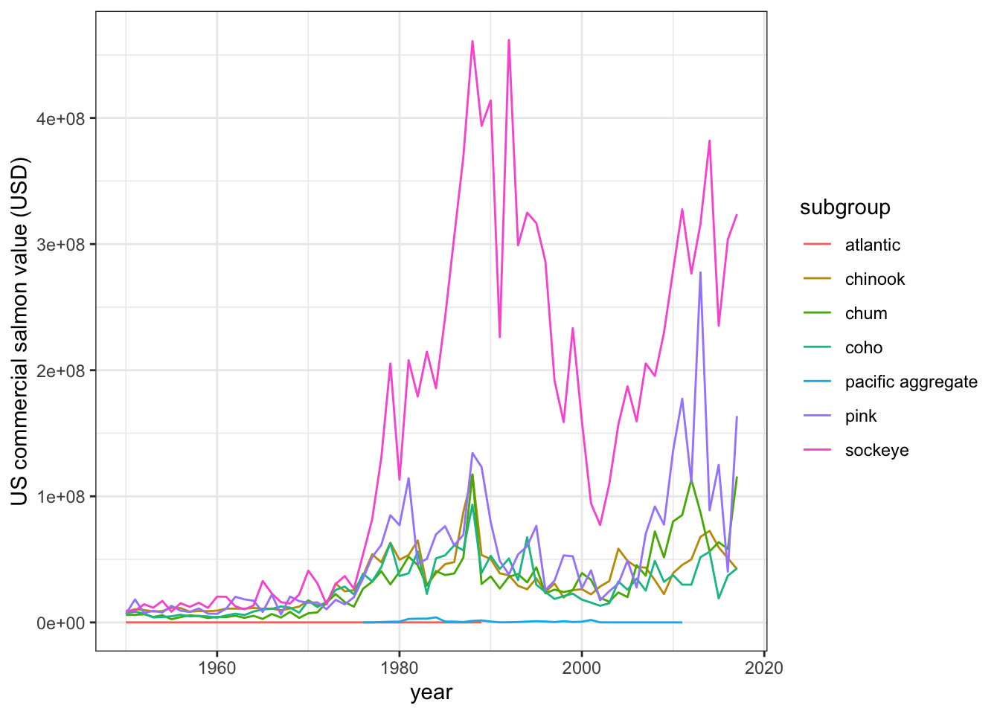

Chapter 10 Synthesis
10.1 Summary
In this session, we’ll pull together many of the skills that we’ve learned so far. Working in our existing yourname_fisheries.Rmd file within your collaborative project/repo from the previous session (r-collab), we’ll wrangle and visualize data from spreadsheets in R Markdown, communicate between RStudio (locally) and GitHub (remotely) to keep our updates safe, then add something new to our collaborator’s document. And we’ll learn a few new things along the way!
Data used in the synthesis section: File name: noaa_fisheries.csv Description: NOAA Commercial Fisheries Landing data (1950 - 2017) Accessed from: https://www.st.nmfs.noaa.gov/commercial-fisheries/commercial-landings/ Source: Fisheries Statistics Division of the NOAA Fisheries
Note on the data: “aggregate” here means “These names represent aggregations of more than one species. They are not inclusive, but rather represent landings where we do not have species-specific data. Selecting”Sharks“, for example, will not return all sharks but only those where we do not have more specific information.”
10.1.1 Objectives
- Synthesize data wrangling and visualization skills learned so far
- Add a few new tools for data cleaning from
stringr - Work collaboratively in an R Markdown file
- Publish your collaborative work as a webpage
10.1.2 Resources
- Project oriented workflows by Jenny Bryan
10.2 Attach packages, read in and explore the data
In your .Rmd, attach the necessary packages in the topmost code chunk:
library(tidyverse)
library(here)
library(janitor)
library(paletteer) # install.packages("paletteer")Open the noaa_landings.csv file in Excel. Note that cells we want to be stored as NA actually have the words “no data” - but we can include an additional argument in read_csv() to specify what we want to replace with NA.
Read in the noaa_landings.csv data as object us_landings, adding argument na = "no data" to automatically reassign any “no data” entries to NA during import:
Go exploring a bit:
10.3 Some data cleaning to get salmon landings by species
Now that we have our data in R, let’s think about some ways that we might want to make it more coder- and analysis-friendly.
Brainstorm with your partner about ways you might clean the data up a bit. Things to consider:
- Do you like typing in all caps?
- Are the column names manageable?
- Do we want symbols alongside values?
If your answer to all three is “no,” then we’re flying on the same plane. Here we’ll do some wrangling led by your recommendations for step-by-step cleaning.
Which of these would it make sense to do first, to make any subsequent steps easier for coding? We’ll start with janitor::clean_names() to get all column names into lowercase_snake_case:
Continue building on that sequence to:
- Convert everything to lower case with
mutate()+ (str_to_lower()) - Remove dollar signs in value column (
mutate()+parse_number()) - Keep only observations that include “salmon” (
filter()+str_detect()) - Separate “salmon” from any additional refined information on species (
separate())
The entire thing might look like this:
salmon_clean <- us_landings %>%
clean_names() %>% # Make column headers snake_case
mutate(
afs_name = str_to_lower(afs_name)
) %>% # Converts character columns to lowercase
mutate(dollars_num = parse_number(dollars_usd)) %>% # Just keep numbers from $ column
filter(str_detect(afs_name, pattern = "salmon")) %>% # Only keep entries w/"salmon"
separate(afs_name, into = c("group", "subgroup"), sep = ", ") %>% # Note comma-space
drop_na(dollars_num) # Drop (listwise deletion) any observations with NA for dollars_numExplore salmon_clean.
10.4 Find total annual US value ($) for each salmon subgroup
Find the annual total US landings and dollar value (summing across all states) for each type of salmon using group_by() + summarize().
Think about what data/variables we want to use here: If we want to find annual values by subgroup, then what variables are we going to group by? Are we going to start from us_landings, or from salmon_clean?
10.5 Make a graph of US commercial fisheries value by species over time with ggplot2
salmon_gg <-
ggplot(salmon_us_annual,
aes(x = year, y = tot_value, group = subgroup)) +
geom_line(aes(color = subgroup)) +
theme_bw() +
labs(x = "year", y = "US commercial salmon value (USD)")
salmon_gg
10.6 Built-in color palettes
Want to change the color scheme of your graph? Using a consistent theme and color scheme is a great way to make reports more cohesive within groups or organizations, and means less time is spent manually updating graphs to maintain consistency!
Luckily, there are many already built color palettes. For a glimpse, check out the ReadMe for paletteer by Emil Hvidtfelt, which is an aggregate package of many existing color palette packages.
In fact, let’s go ahead and install it by running install.packages("paletteer") in the Console.
Question: Once we have paletteer installed, what do have to do to actually use the functions & palettes in paletteer?
Answer: Attach the package! Update the topmost code chunk with library(paletteer) to make sure all of its functions are available.
Now, explore the different available packages and color palettes by typing (in the Console) View(palettes_d_names). Then, add a new color palette from the list to your discrete series with an adding ggplot layer that looks like this:
Note: Beware of the palette length - we have 7 subgroups of salmon, so we will want to pick palettes that have at least a length of 7.
Once we add that layer, our entire graph code will look something like this (here, using the OkabeIto palette from the colorblindr package):
salmon_gg <-
ggplot(salmon_us_annual,
aes(x = year, y = tot_value, group = subgroup)) +
geom_line(aes(color = subgroup)) +
theme_bw() +
labs(x = "year", y = "US commercial salmon value (USD)") +
scale_color_paletteer_d("colorblindr::OkabeIto")
salmon_gg
Looking again at palettes_d_names, choose another color palette and update your gg-graph.
10.7 Sync with GitHub remote
Stage, commit, (pull), and push your updates to GitHub for safe storage & sharing. Check to make sure that the changes have been stored in your shared r-collab repo.
10.8 Add an image to your partner’s document
Now, let’s collaborate with our partner.
First:
- Pull again to make sure you have your partner’s most updated versions (there shouldn’t be any conflicts since you’ve been working in different .Rmd files)
- Now, open your partner’s .Rmd in RStudio
Second:
- Go to octodex.github.com and find a version of octocat that you like
- On the image, right click and choose “Copy image location”
- In your partner’s .Rmd, add the image at the end using:
!()[paste_image_location_you_just_copied_here]
- Knit the .Rmd and check to ensure that your octocat shows up in their document
- Save, stage, commit, pull, then push to send your contributions back
- Pull again to make sure your .Rmd has updates from your collaborator
- Check out out your document as a webpage published with gh-pages!
10.8.0.1 Reminder for gh-pages link:
username.github.io/repo-name/file-name
10.8.0.2 Troubleshooting gh-pages viewing revisited:
- 404 error? Remove trailing / from the url
- Wants you to download? Remove trailing .Rmd from the url